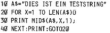

Nascom Journal |
Juli/August 1982 · Ausgabe 7/8 |
Einige Probleme, die einem naechtelanges Kopfzerbrechen bereiten koennen und weder bei dem oertlichen noch anderen Computergeschaeften oder Distributoren bekannt zu sein scheinen und deren Loesung, so einfach sie auch ist, fuer immer in einem undurchsichtigen Nebel von Vermutungen verborgen zu bleiben scheint, bis man mehr oder weniger durch Zufall darauf kommt oder sogar jemand kompetenten trifft, verdienen veroeffentlicht zu werden.
Geben Sie das folgende kurze Basic-Programm ein.
Sollte bei 4 MHz nach einiger Laufzeit der String nur unvollstaendig auf dem Bildschirm ausgegeben werden, so sind Sie nicht der einzige Nascom 2-Besitzer, der sich nach einigem Kopfzerbrechen schon fast damit abgefunden hat, Basic nur bei 2 MHz zu benutzen. Uebrigens kann auch Zeap Schwierigkeiten bereiten.
Die Ursache ist beim CPU-Takt zu suchen. Da der Video-Teil eine 8 MHz-Frequenz benoetigt, ist der Taktgenerator mit einem 16 MHz-Quartz aufgebaut. Das ist fuer den Z-80 A eigentlich unnoetig kritisch, da der System-Takt erst durch zweimaliges Teilen erzeugt wird. Und tatsaechlich sind einige Rechner dadurch recht unzuverlaessig.
Abhilfe: Man stellt LSW 1/9 nach unten und schliesst am Bus seinen eigenen Taktgenerator an. Dabei kann es sein, dass man unversehens auf eine ueberraschende Tatsache stoesst.
Als ich mich an den Aufbau des Schwingkreises machen wollte, war ploetzlich in der gesamten Umgebung kein 4 MHz-Quartz aufzutreiben, Mehr versuchsweise schloss ich also einen einfachen, mit Wendelpoti abstimmbaren, RC-Oszillator an, Und siehe da, oben aufgefuehrtes Testprogramm lief nicht nur bei 4 sondern bis gut 5 MHz ohne Wait-Zyklus fehlerfrei. Bei dieser einigermassen beeindruckenden Geschwindigkeit arbeitet mein System mit PIO, 2716-EPROMS und RAM „A“ Karte seit einem Monat problemlos. Wer nicht unbedingt Wert auf Quartz-Stabilitaet legt, kann so mit optimaler Einstellung das Letzte aus seinem Rechner herausholen.
Wenn man die NMI-Taste nicht unbedingt benoetigt, kommt man sogar ohne ein zusaetzliches IC aus. Die Beinchen 12 und 13 von IC 11 (74LS14) werden herausgebogen und die entsprechenden Anschluesse der Fassung durch einen Draht ueberbrueckt. Jetzt ist der Interrupt-Taster nicht mehr entprellt, aber damit kann man leben. An den umgebogenen Beinchen des IC wird nun der Oszillator wie folgt aufgebaut (unbedingt Wendelpoti verwenden und LSW 1/9 nach unten schalten):
Auch bei meiner RAM „A“-Karte versuchte ich alle obligatorischen Mittel, um ihr die „weichen Fehler“ abzugewoehnen. Entgegen aller anderslautenden Versprechungen war aber bei 4 MHz kein Programm zum Laufen zu bewegen, bis ich auf der Hobby-Elektronik ’81 in Stuttgart die Moeglichkeit hatte, mich mit dem Sales-Manager von Lucas Logic Ltd. zu unterhalten. Der gab mir dann den entscheidenden Tip: Alle zusaetzlichen Kondensatoren und Widerstaende entfernen und stattdessen nur die Drahtbruecken P8-P9 und P12-P13 durch 68 Ohm-Widerstaende ersetzen. Meine Karte laeuft seitdem einwandfrei, und da ich nicht glaube, dass sich diese einfache Massnahme schon allgemein herumgesprochen hat, wollte ich sie nicht unerwaehnt lassen.
| Seite 9 von 60 |
|---|